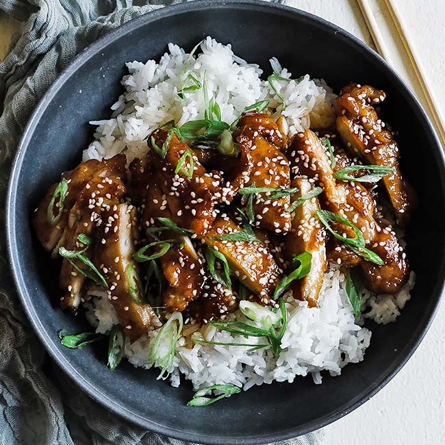

Teriyaki Chicken

chicken chicken chicken soy sauce soy sauce soy sauce chicken
teriyaki teriyaki chicken chicken chicken bawk bawk bawk yummy chicken teriyaki white rice yum white rice yum
Ingredients
- 2 C Soy Sauce
- 3/4 C brown sugar
- 1 T fresh minced ginger
- 1 clove chopped garlic
- 6 chicken breasts or thighs
Steps:
- Combine all ingredients together
- Marinade for 2-6 hours
- Bake at 375°F for 1 hour. Serve with white rice and veggies